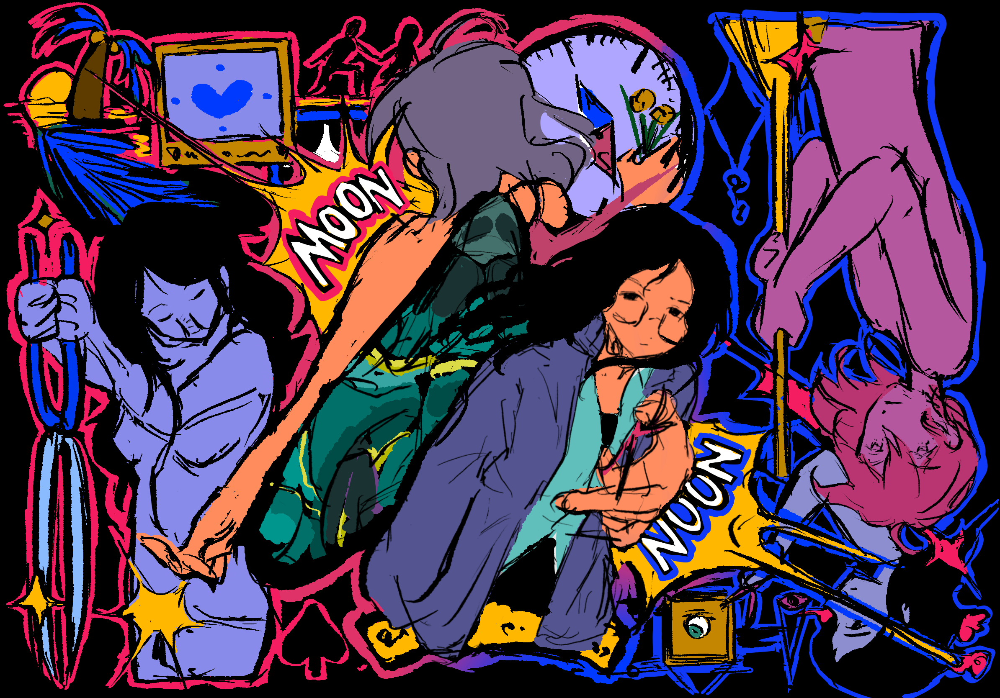

Hua Tong is an interdisciplinary designer, illustrator, architect, and researcher. This portfolio spans architecture, industrial design, historical research, tabletop game design, and illustration — held together by a balance of exploration, responsibility, empathy, and documentation. Sometimes a solution is offered. Other times, one isn't.
huatong0404@gmail.com